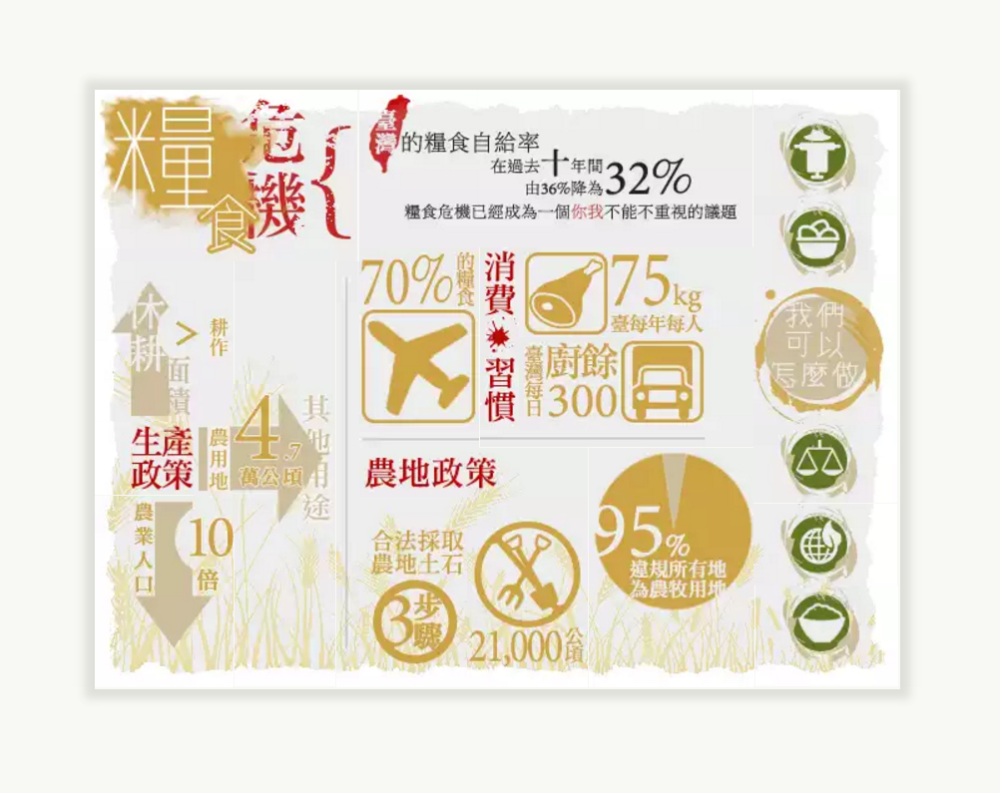

Food Crisis Website
Team Project for Multimedia Design and Digital Archives course (Fall 2013) at National Taiwan University (NTU)
Featured in the "2014 Food x Production x Consumption Exhibition" at NTU Agricultural Exhibit Hall
Role
Content organization & contribution
Website HTML/CSS/JavaScript
Goal
We hoped to raise awareness and introduce the food crisis situation in Taiwan to the general public through multimedia content.
Challenge
- We needed to first research on the issues that we weren't familiar with before and decided on how and what content to curate.
- In order to attract interests, we chose to design the homepage as an interactive and responsive infographic with mouseover effects on images.
Result
The website was later featured on the website of the "2014 Food x Production x Consumption Exhibition" at NTU Agricultural Hall.